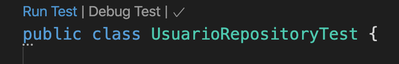
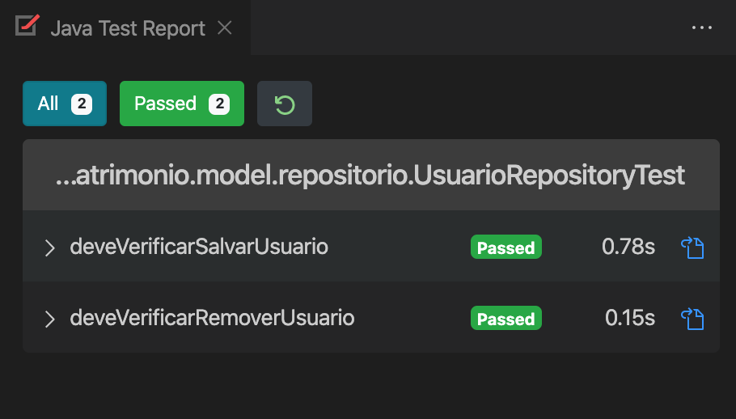

name: inverse class: center, middle, main-title # Primeiro Teste de Unidade Laboratório de Programação --- # Objetivo - implementar primeiro teste de unidade - avaliar se mapeamento está correto --- # O que testar? - Por equanto apenas o mapeamento - quase certeza que não existem erros no lib do spring data > Então você deve avaliar o repository --- # Primeiro teste - Para iniciar o teste, é necessário criar uma classe, dentro da pasta `test.<>.<>` - ideal que tenha a mesma estrutura do pacote original - logo: criar pasta `model\repositorio` dentro de `test\java\com\labprog\patrimonio` - Vamos testar a classe `UsuarioRepository` - Logo o nome da classe de teste deve ser `UsuarioRepositoryTest` ```java package com.labprog.patrimonio.model.repositorio; public class UsuarioRepositoryTest { } ``` --- # Precisamos informar o SpringBoot que é um teste - Inserindo a anotação `@SpringBootTest` para importar `Junit` ```java @SpringBootTest public class UsuarioRepositoryTest { } ``` --- # Agora precisamos escrever um teste - O método deve ser `void` - Ser anotado por `@Test` - E ter um nome descritivo ```java @SpringBootTest public class UsuarioRepositoryTest { UsuarioRepository repository; @Test public void deveVerificarSalvarUsuario() { } } ``` --- # Problemas: - Quem instancia `repository` ? - Utiliza-se a injeção de dependências do SpringBoot - Ele encontra uma instância e injeta na variável - Mas para isso: - precisa do contexto, com `@ExtendWith(SpringExtension.class)` - O atributo deve ser anotado com `@Autowired` ```java @ExtendWith(SpringExtension.class) @SpringBootTest public class UsuarioRepositoryTest { @Autowired UsuarioRepository repository; @Test public void deveVerificarSalvarUsuario() { } } ``` --- # Vamos ao teste em si: > Deseja-se criar um usuário qualquer --> cenário > Inserir --> ação > Checar se está no banco --> verificação --- # Vamos ao teste em si: ```java @ExtendWith(SpringExtension.class) @SpringBootTest public class UsuarioRepositoryTest { @Autowired UsuarioRepository repository; @Test public void deveVerificarSalvarUsuario() { //cenário //ação //verificação } } ``` --- #Adicionando o cenário ```java @ExtendWith(SpringExtension.class) @SpringBootTest public class UsuarioRepositoryTest { @Autowired UsuarioRepository repository; @Test public void deveVerificarSalvarUsuario() { //cenário Usuario user = Usuario.builder().nome("Teste") .email("teste@teste.com") .senha("123").build(); //ação //verificação } } ``` --- #Realizando a ação ```java @ExtendWith(SpringExtension.class) @SpringBootTest public class UsuarioRepositoryTest { @Autowired UsuarioRepository repository; @Test public void deveVerificarSalvarUsuario() { //cenário Usuario user = Usuario.builder().nome("Teste") .email("teste@teste.com") .senha("123").build(); //ação Usuario salvo = repository.save(user); //salva? //verificação } } ``` --- #Verificando ```java @ExtendWith(SpringExtension.class) @SpringBootTest public class UsuarioRepositoryTest { @Autowired UsuarioRepository repository; @Test public void deveVerificarSalvarUsuario() { //cenário Usuario user = Usuario.builder().nome("Teste") .email("teste@teste.com") .senha("123").build(); //ação Usuario salvo = repository.save(user); //salva? //verificação Assertions.assertNotNull(salvo); Assertions.assertEquals(user.getNome(), salvo.getNome()); Assertions.assertEquals(user.getEmail(), salvo.getEmail()); Assertions.assertEquals(user.getSenha(), salvo.getSenha()); Assertions.assertEquals(user.getNome(), salvo.getNome()); } } ``` --- # Rodando os testes: - A opção de rodar no VSCode fica integrada ao nome da classe por saber que é de teste - em outros ambientes procure por 'Run JUnit' - outro ponto, instalar o `Java Test Report` para auxiliar <center>  </center> --- # Um ponto a mais: - Todas as operações acima foram realizadas sobre a base de dados atual - ideal que existe uma outra base de dados para teste - assim pode ser manipulada sem mudar dados em desenvolvimento - ela tem que `obrigatoriamente` ser igual à original - Uma forma: - Usar um banco em memória: `H2` - Outra forma: - criar outro database (ou schema) no postgres --- # Criando uma config específica para teste - Volte ao arquivo application.properties - Crie uma versão de teste dele: `application-test.properties` - essa adição `test` será usada na aplicação para se referenciar a este esquema de teste - Configure para o H2: ```java spring.datasource.url=jdbc:h2:mem:db;INIT=create schema if not exists financas spring.datasource.username=sa spring.datasource.password=sa spring.datasource.driver-class-name=org.h2.Driver ``` --- # Adicione o `H2` no POM.XML - Arquivo de dependências do projeto - Quando quiser adicionar uma, uma dica é procurar no maven - maven h2 ```xml <dependency> <groupId>com.h2database</groupId> <artifactId>h2</artifactId> </dependency> ``` - é provável que o VS queira atualizar para obter as dependências - Agora basta dizer que a classe será configurada por este perfil - Use `@ActiveProfiles("test")` na classe `UsuarioRepositoyTest` --- ## Nossso teste em ambiente específico ```java @ExtendWith(SpringExtension.class) @SpringBootTest @ActiveProfiles("test") public class UsuarioRepositoryTest { @Autowired UsuarioRepository repository; @Test public void deveVerificarSalvarUsuario() { //cenário Usuario user = Usuario.builder().nome("Teste") .email("teste@teste.com") .senha("123").build(); //ação Usuario salvo = repository.save(user); //salva? //verificação Assertions.assertNotNull(salvo); Assertions.assertEquals(user.getNome(), salvo.getNome()); Assertions.assertEquals(user.getEmail(), salvo.getEmail()); Assertions.assertEquals(user.getSenha(), salvo.getSenha()); Assertions.assertEquals(user.getNome(), salvo.getNome()); } } ``` --- # Adicionar um segundo teste ```java @Test public void deveVerificarRemoverUsuario() { //cenário Usuario user = Usuario.builder().nome("Teste") .email("teste@teste.com") .senha("123").build(); //ação Usuario salvo = repository.save(user); //salva Long id = salvo.getId(); repository.deleteById(salvo.getId()); //verificação Optional<Usuario> temp = repository.findById(id); Assertions.assertFalse(temp.isPresent()); } ``` --- # Rodando tudo junto <center>  </center> --- name: inverse class: center, middle, main-title # Este foi o primeiro passo! A cada nova implementação, teremos novos